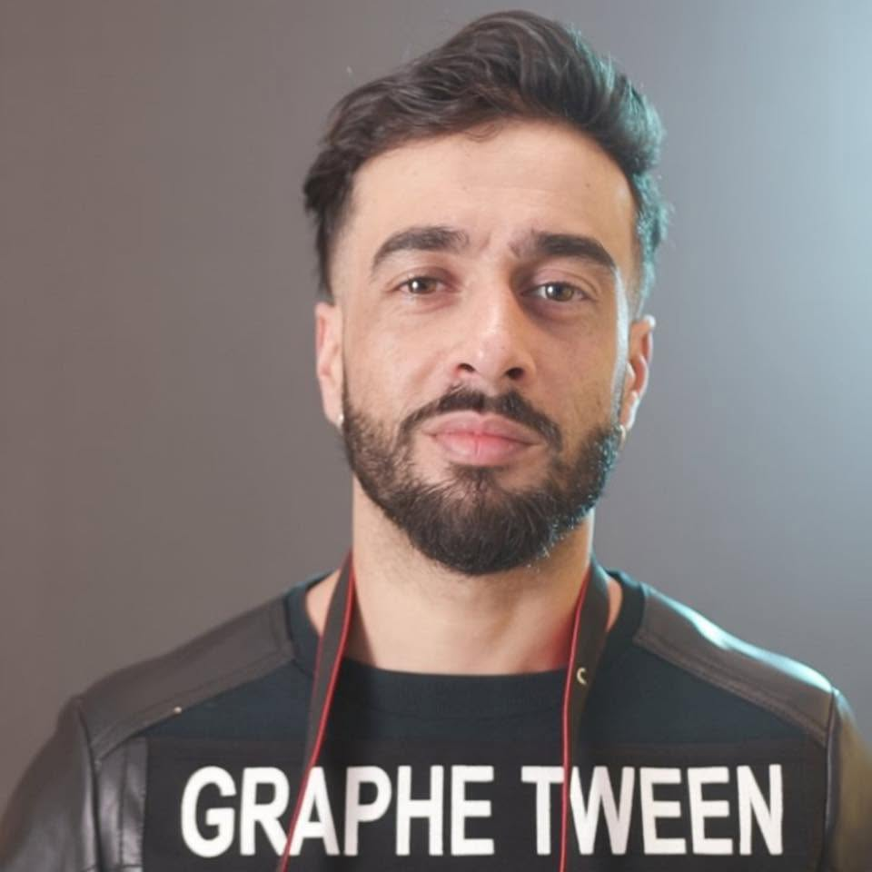

OPENING SHOT · OUJDA, MOROCCO
SAMIR
ZAHRI
Filmmaker · Director · Cinematographer

02 / SELECTED FILM WORK
Selected Film Work
Conventional filmmaking projects selected to show direction, camera practice and contribution on set.
03 / FILM ARCHIVE
Film Archive
Additional verified film work, presented with exact roles and credits.
04 / EXPERIMENTAL MOVING IMAGE
Experimental Moving Image
05 / PROFESSIONAL PRACTICE
Selected Professional Practice
06 / CONTACT SHEET
Photography
Selected photographic work presented as a complete visual archive.
07 / ACADEMIC JOURNEY
Academic Journey
Formal audiovisual training and university cinema studies supporting an ongoing filmmaking practice.
Selected Academic Focus
08 / TECHNICAL BACKGROUND
Technical Background
Tools and production skills that support the work, without turning the portfolio into an equipment catalogue.
09 / JOURNEY
Practice & Study
10 / DIRECTOR PROFILE
Director Profile
11 / END CREDITS
Samir Zahri
Filmmaker · Director · Cinematographer
OUJDA, MOROCCO · PORTFOLIO / 2026